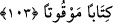

–“Hayır, fakat ebedî olarak seninle savaşmayacağıma ve sana karşı kimseye yardım
etmeyeceğime şehâdet ederim.” dedi. Bunun üzerine Rasûlullah (s.a.v) ona kılıcını
verdi.
Gavres:
–“Vallahi sen benden çok hayırlısın.” deyince Rasûlullah (a.s):
–“Ben ona senden daha layığım.” buyurdu.
Gavres arkadaşlarının yanına dönüp olanları anlattı. Bâzıları îmana geldi. Yağmur
dinip vâdinin seli çekilince Rasûlullah (s.a.v) ashâbının yanına döndü ve hâdiseyi
onlara anlattı.”[136]
“Şüphesiz Allah kâfirler için alçaltıcı bir azap hazırlamıştır.” ifadesi tedbir almanın
sebebini açıklamaktadır. Yâni, onları yüzüstü bırakarak ve onlara karşı size yardım
ederek onlara alçaltıcı bir azap hazırlamıştır. Öyleyse işlerinize önem verin sebeplere
sarılmayı ihmal etmeyin ki Allah’ın azâbı sizin ellerinizle onlara insin.
103- Namazı bitirince de ayakta, otururken ve yanınız üzerinde yatarken
(dâimâ) Allah’ı anın. Güvene kavuşunca da namazı dosdoğru kılın; çünkü namaz
mü’minler üzerine vakitleri belli bir farzdır.
“Namazı bitirince de” yâni korku namazını açıklandığı şekilde eda edip
bitirdiğinizde demektir. Bu âyetten anlaşılmaktadır ki “
” kelimesi vaktinde yapılan
ibâdet için kullanılmaktadır. “Hac ibâdetlerinizi bitirince” (Bakara, 2/200) âyeti de bu
kabildendir. “ayakta, otururken ve yanınız üzerinde yatarken Allah’ı anın.” Allah
Teâlâ’nın zikrine devâm edin, düşmanla mücâdele ve savaş hâli de dâhil olmak üzere
bütün hallerde O’nun murâkabesine O’na münâcât ve duâya devâm ediniz. Nitekim
Allah Teâlâ: “Bir toplulukla karşılaştığınız zaman sebat edin ve Allah’ı çok
zikredin ki kurtuluşa erişesiniz” (Enfal, 8/45) buyurmuştur.
“Güvene kavuşunca da”, kalpleriniz korkudan sükûnete erdikten ve harp bittikten
sonra “namazı dosdoğru kılın” vakti giren namazı ta’dîl-i erkâna ve şartlarına riâyet
ederek eda edin.
Buradaki “zikr”i, Hanefîler’den lisan ile yapılan zikir ve namaz olarak yorumlayan
kimse âyetin tefsîrinde şöyle der: Her halükarda Allah’ın zikrine devâm edin. Namazı
edâ etmek istediğiniz zaman sıhhatli ve ayakta durabilecek güçte iseniz ayakta durarak,
hastalık ve âcizlik hâlinde oturarak, oturmaktan aciz olduğunuzda ise yan tarafınıza